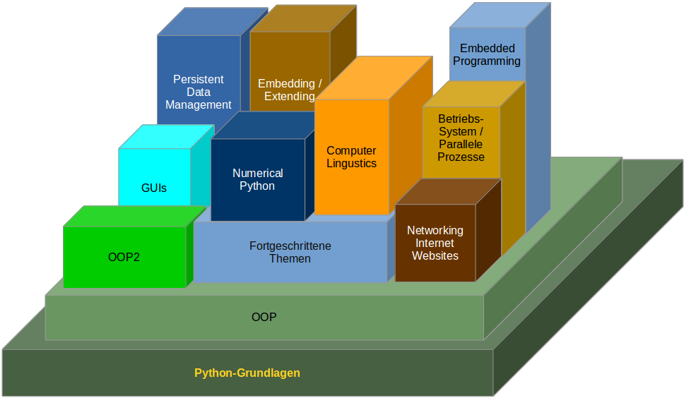

Python is a high-level programming language designed to be easy to read and simple to implement. It is open source, which means it is free to use, even for commercial applications. Python can run on Mac, Windows, and Unix systems and has also been ported to Java and .NET virtual machines. Python is considered a scripting language, like Ruby or Perl and is often used for creating Web applications and dynamic Web content. It is also supported by a number of 2D and 3D imaging programs, enabling users to create custom plug-ins and extensions with Python. Examples of applications that support a Python API include GIMP, Inkscape, Blender, and Autodesk Maya. Scripts written in Python (.PY files) can be parsed and run immediately. They can also be saved as a compiled programs (.PYC files), which are often used as programming modules that can be referenced by other Python programs.
began in December 1989 by Guido van Rossum at Centrum Wiskunde & Informatica (CWI) in the Netherlands as a successor to the ABC language (itself inspired by SETL) capable of exception handling and interfacing with the Amoeba operating system.
Python reached version 1.0 in January 1994. The major new features included in this release were the functional programming tools lambda, map, filter and reduce. Van Rossum stated that "Python acquired lambda, reduce(), filter() and map(), courtesy of a Lisp hacker who missed them and submitted working patches".[11]
Python 2.0 introduced list comprehensions, a feature borrowed from the functional programming languages SETL and Haskell. Python's syntax for this construct is very similar to Haskell's, apart from Haskell's preference for punctuation characters and Python's preference for alphabetic keywords. Python 2.0 also introduced a garbage collection system capable of collecting reference cycles.[7] Python 2.1 was close to Python 1.6.1, as well as Python 2.0. Its license was renamed Python Software Foundation License. All code, documentation and specifications added, from the time of Python 2.1's alpha release on, is owned by the Python Software Foundation (PSF), a non-profit organization formed in 2001, modeled after the Apache Software Foundation.[15] The release included a change to the language specification to support nested scopes, like other statically scoped languages.[16] (The feature was turned off by default, and not required, until Python 2.2.) A major innovation in Python 2.2 was the unification of Python's types (types written in C) and classes (types written in Python) into one hierarchy. This single unification made Python's object model purely and consistently object oriented.[17] Also added were generators which were inspired by Icon.[18] Python 2.5 was released on September 2006 [19] and introduced the with statement, which encloses a code block within a context manager (for example, acquiring a lock before the block of code is run and releasing the lock afterwards, or opening a file and then closing it), allowing Resource Acquisition Is Initialization (RAII)-like behavior and replacing a common try/finally idiom. [20] Python 2.6 was released to coincide with Python 3.0, and included some features from that release, as well as a "warnings" mode that highlighted the use of features that were removed in Python 3.0.[21][9] Similarly, Python 2.7 coincided with and included features from Python 3.1,[22] which was released on June 26, 2009. Parallel 2.x and 3.x releases then ceased, and Python 2.7 was the last release in the 2.x series.[23] In November 2014, it was announced that Python 2.7 would be supported until 2020, but users were encouraged to move to Python 3 as soon as possible.[24]
The last version released while Van Rossum was at CWI was Python 1.2. In 1995, Van Rossum continued his work on Python at the Corporation for National Research Initiatives (CNRI) in Reston, Virginia whence he released several versions. By version 1.4, Python had acquired several new features. Notable among these are the Modula-3 inspired keyword arguments (which are also similar to Common Lisp's keyword arguments) and built-in support for complex numbers. Also included is a basic form of data hiding by name mangling, though this is easily bypassed.[12] During Van Rossum's stay at CNRI, he launched the Computer Programming for Everybody (CP4E) initiative, intending to make programming more accessible to more people, with a basic "literacy" in programming languages, similar to the basic English literacy and mathematics skills required by most employers. Python served a central role in this: because of its focus on clean syntax, it was already suitable, and CP4E's goals bore similarities to its predecessor, ABC. The project was funded by DARPA.[13] As of 2007, the CP4E project is inactive, and while Python attempts to be easily learnable and not too arcane in its syntax and semantics, reaching out to non-programmers is not an active concern.Python 3.0 (also called "Python 3000" or "Py3K") was released on December 3, 2008.[8] It was designed to rectify fundamental design flaws in the language—the changes required could not be implemented while retaining full backwards compatibility with the 2.x series, which necessitated a new major version number. The guiding principle of Python 3 was: "reduce feature duplication by removing old ways of doing things". Python 3.0 was developed with the same philosophy as in prior versions. However, as Python had accumulated new and redundant ways to program the same task, Python 3.0 had an emphasis on removing duplicative constructs and modules, in keeping with "There should be one— and preferably only one —obvious way to do it". Nonetheless, Python 3.0 remained a multi-paradigm language. Coders still had options among object-orientation, structured programming, functional programming and other paradigms, but within such broad choices, the details were intended to be more obvious in Python 3.0 than they were in Python 2.x.
learn more about python at the link below:
This is a link